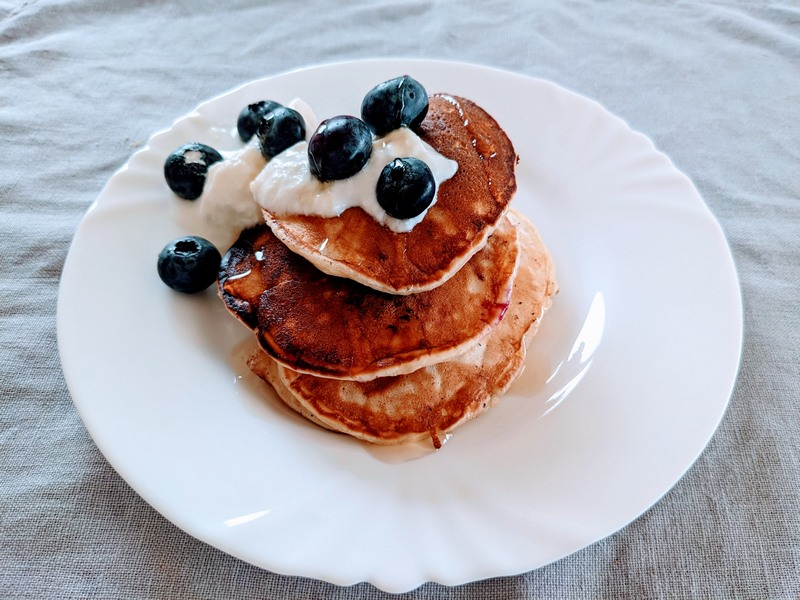

Koukám, že už se tady na blogu pěkně dlouho nevařilo! Poslední dobou moc nestíhám zaznamenávat, ale pár nových receptů, které jsme si doma oblíbili a zařadili je do našeho stálého repertoáru, se mi nastřádalo, tak vás tu s nimi budu asi postupně oblažovat O:-) Prvním z nich, které si tu chci uložit, je tenhle top recept na luxusní (nejen) snídaňové lívance podle blogu Milluji. Od lívanců mě většinou vždy odrazovala zdlouhavá příprava, zcela v nepoměru k tomu, jak rychle se vždy sní. Tento recept je ale vskutku bleskurychlý!
- 200g hladké mouky
- 150g bílého jogurtu
- 100g kefíru
- 100g mléka
- 2 vejce
- 20g rozpuštěného másla
- 1 kávová lžička mleté vanilky (případně dávám vanilkový extrakt)
- 40g moučkového cukru
- najemno nastrouhaná kůra z 1 bio citronu
- 1/2 kávové lžičky jedlé sody
- 1/2 kávové lžičky prášku do pečiva
- špetka soli
- 125g čerstvých borůvek
V jedné míse si smícháme sypké ingredience - mouku, sůl, cukr, vanilku, kypřící prášek a jedlou sodu. Ve druhé si smícháme ty tekuté - jogurt, kefír, mléko, máslo a vejce. Poté přidáme tekuté ingredience do mísy k těm sypkým. Vše promícháme metličkou a nakonec přidáme ještě citronovou kůru a borůvky. Lívance smažíme nasucho na nepřilnavé pánvi (loni jsem dostala k Vánocům nerezovou a od té doby na ni nedám dopustit, je to opravdu ta nejlepší pánev na světě!) z obou stran. Podávat můžeme s tvarohem, jogurtem, čekankovým sirupem i čerstvým ovocem.
